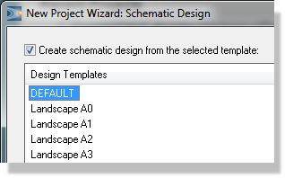
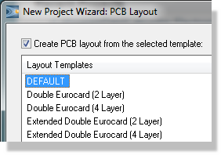
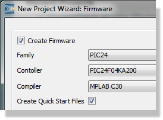
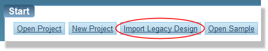
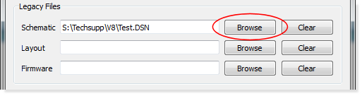
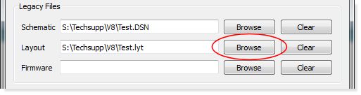
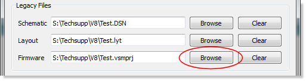
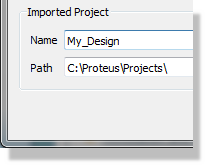

The Proteus schematic module makes use of the following file types:
All data from the schematic is collated and stored as part of the main Proteus project file with extension 'PDSPRJ'. This is a compound file containing the schematic data, the layout data, the project database and potentially other simulation related files. Backup copies made when saving over an existing file are prefixed with 'Backup of...'.
Information about which modules are open in Proteus (e.g. Schematic, Bill of Materials and Layout) together with their positions on your monitor(s) and which frames they are in are stored in the project workspace file. This allows you to return to the same project state when you reload a project.
A section of a drawing can be exported to a section file and subsequently read into another drawing. Section files have the extension 'SEC'. and are read and written by the Import and Export commands on the File menu.
Module files have the extension 'MOD' and are used in conjunction with the other features for hierarchical design. See hierarchical designs for further information.
Symbol and device libraries have the extension 'LIB'.
The Proteus VSM simulation system uses other file types as well. See the VSM manual for further details.
To start a new design you need to create a new Proteus project. You do this by invoking the New Project Wizard either from the home page or from the file menu. This wizard guides you through the setup of your next Proteus project. There is a start page in which you specify the project name and destination directory and then potentially three main screens for schematic, PCB and firmware.
When creating a schematic check the box at the top of the screen and then select the template on which you want to base the schematic. Those provided by Labcenter basically contain different sizes of work area, although you can customize and save your own templates from within the schematic capture module.

If you are creating a PCB check the box at the top of the screen and select from the available templates. PCB templates contain pre-defined board edges, mounting holes and a full set of technology data (design rules, layers in use, default units, etc.) As with schematic, you can customize and save your own templates from within the PCB layout module.

This screen will only be presented to you if you have a license for one of the Proteus PCB design products.
If you are creating an embedded design and want to simulate your firmware, check the create firmware box at the top of the screen and then select your controller and compiler using the combo boxes. If selected, the quick start files checkbox will generate a skeleton firmware project for you and configure project settings for compilation.

Creating a firmware project requires a schematic in order to simulate so you cannot proceed from this screen if you opted not to create a schematic earlier in the wizard.
The combo boxes on this screen are license aware so you cannot create a firmware project for a controller than you cannot simulate in Proteus.
There is also a summary page at the end allowing you to review your setup before the wizard exits and generates the project files.
See Also:
Creating a New Project (Tutorial)
Loading an existing project can be done in three ways:
Older versions of Proteus (prior to Proteus 8) typically contained several files such as a DSN file for schematic and a LYT file for layout. The Import Wizard on the home page and File Menu is used to bring these projects into Proteus.
To import a legacy project
Launch the import wizard.

Browse for the old schematic (.dsn file)

If a PCB file (.lyt file) is associated with the schematic it will automatically appear in the Layout field. If there is no layout file associated with the schematic then leave this field blank.

If an old VSMStudio file (.vsmp) with the same name as the schematic exists in the same directory it will automatically appear in the VSM Studio edit box. If the wrong VSMP file appears or there is no corresponding VSMP file then either browse for the file or leave blank.

The project name and path are taken from the filestem and location of the schematic being imported. You can change this if required from the fields at the bottom of the dialogue box.

If you change the path for a VSM project then you will need to manually change the PROGRAM property of the microcontroller, otherwise your simulation will fail.
When you are finished use the import button to create an import a Proteus 8 project.
You can save your Project when quitting via the Exit command, or at any other time, using the Save Project command. In both cases it is saved to the same file from which it was loaded. The old version will be prefixed with the text ‘Backup of’.
The Save As command allows you to save the Project to a different file.
The Export command creates a section file out of all currently tagged objects. This file can then be read into another sheet using the Import command. After you have chosen the section file, operation is identical to the Block Copy function.
These commands have nothing to do with graphics export to DTP packages. The Export Graphics commands handle this functionality
When you wish to end a Proteus session, you should use the Exit command, default key 'Q' or use the cross at the top right of the application. If you have modified the project, you will be prompted as to whether you wish to save it.